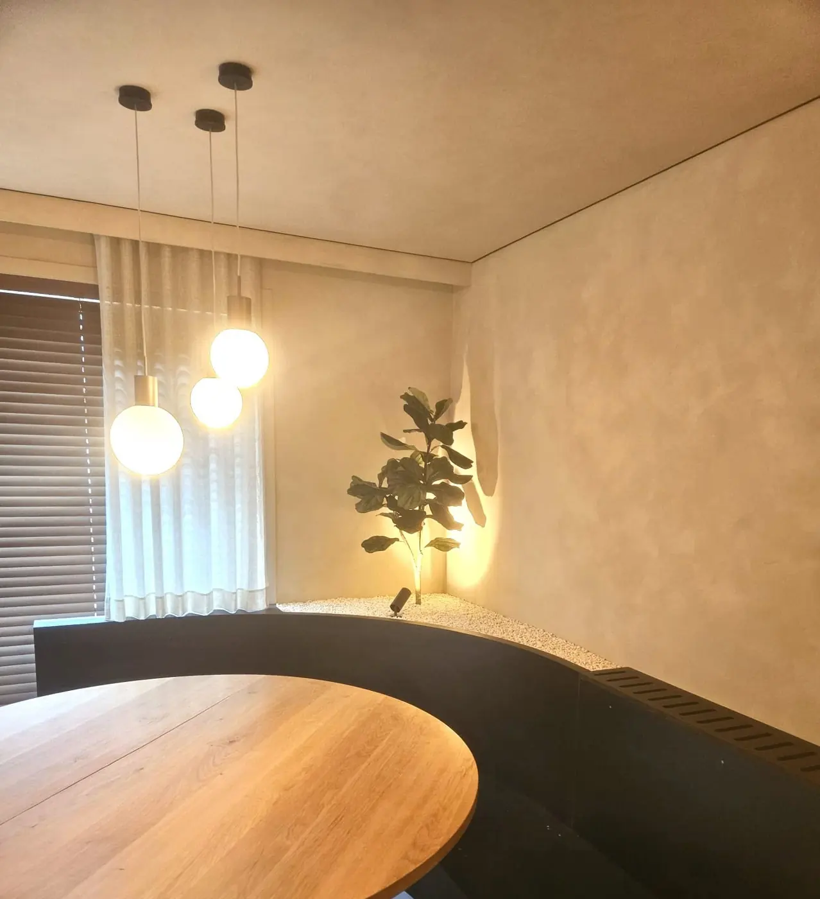
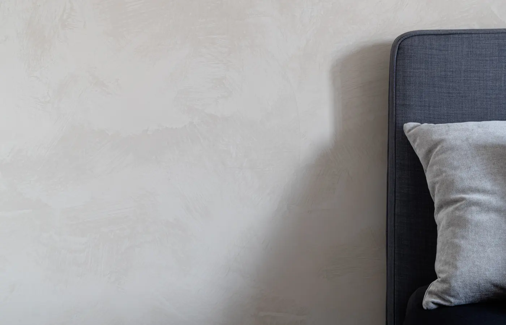
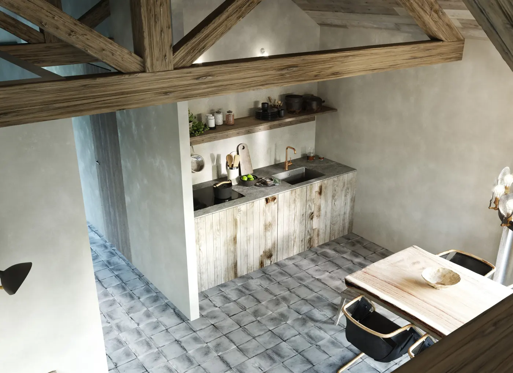
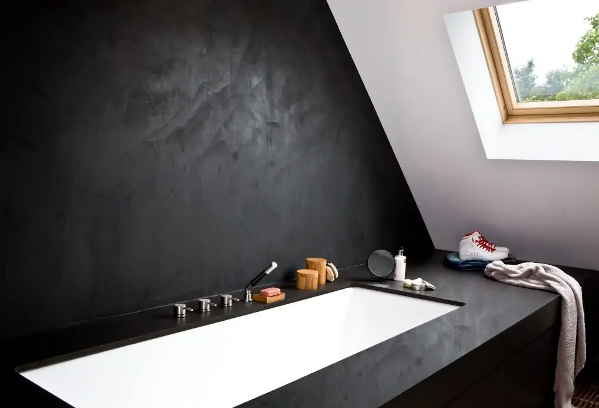
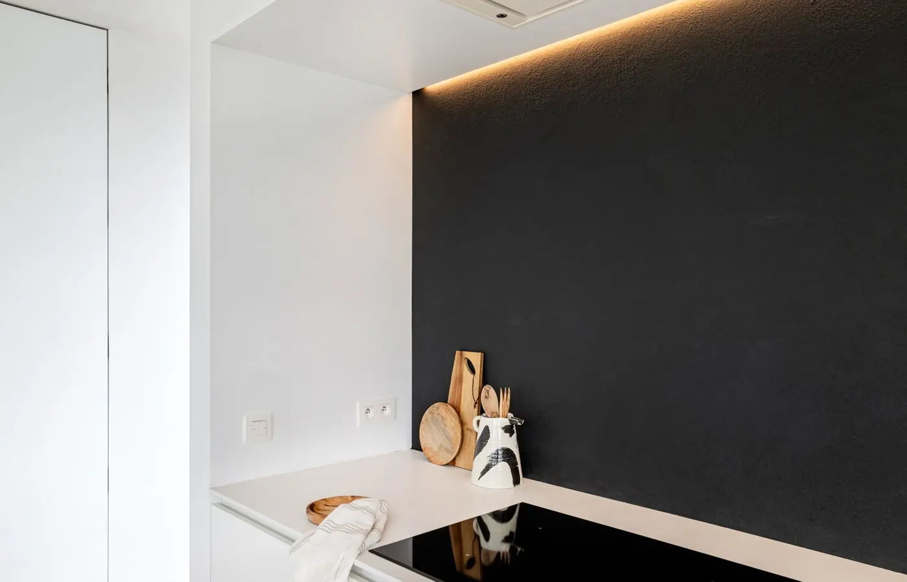

Geef uw interieur karakter met decoratieve afwerkingen
Decoratieve afwerkingen geven een ruimte een unieke uitstraling. Ze zorgen voor sfeer, diepte, structuur en karakter.
Of u nu kiest voor een subtiele kalkafwerking, een strakke betonlook of een uitgesproken accentmuur: samen bekijken we welke techniek het best aansluit bij uw woning, zaak of project.
Zo ontstaat een interieur dat niet alleen mooi oogt, maar ook jarenlang blijft overtuigen.


Inspiratie uit ons aanbod
Elke decoratieve afwerking heeft haar eigen uitstraling, structuur en toepassing. De mogelijkheden zijn bijzonder veelzijdig. Hieronder ontdekt u alvast enkele afwerkingen uit ons aanbod. Tijdens een vrijblijvend plaatsbezoek bekijken we samen welke techniek het best aansluit bij uw interieur, wensen en de functie van de ruimte.
Voor het realiseren van deze technieken werken we uitsluitend met kwaliteitsproducten van Boss Paints. Zo bent u verzekerd van duurzame afwerkingen, hoogwaardige materialen en een professioneel eindresultaat.

LIMESTONE
Rust, diepte en natuurlijke charme
Limestone is een kalktechniek die zorgt voor zachte kleurnuances en natuurlijke bewegingen. De afwerking creëert warmte, diepte en een tijdloze elegantie.
Perfect voor wie houdt van een rustig, natuurlijk interieur met een exclusieve uitstraling.

CALCO
Authentieke kalklook met zachte kleurschakeringen
Calco is een decoratieve kalktechniek die zorgt voor een warme en levendige uitstraling. De subtiele kleurnuances en natuurlijke effecten geven elke wand een eigen uitstraling. Afhankelijk van de gekozen uitvoering kan de afwerking strak en tijdloos ogen of net een meer verweerde, authentieke uitstraling krijgen.
Perfect voor wie op zoek is naar sfeer, warmte en een interieur met een natuurlijke uitstraling.

AQUA SENSA
Naadloze uitstraling met moderne elegantie
Aqua Sensa combineert de uitstraling van beton of natuursteen met het comfort van een naadloze afwerking. Dankzij de sterke en onderhoudsvriendelijke eigenschappen is deze techniek geschikt voor zowel woonruimtes als commerciële toepassingen. Ook in badkamers, keukens en andere intensief gebruikte ruimtes komt deze afwerking perfect tot haar recht.
De afwerking zorgt voor een strak en tijdloos resultaat waarbij rust, eenvoud en duurzaamheid centraal staan.
Perfect voor wie houdt van een moderne uitstraling met een minimum aan voegen en een maximum aan beleving.

STONE ART
De uitstraling van steen, de kracht van structuur
Stone Art creëert een authentieke steenlook met extra diepte en reliëf. De decoratieve afwerking combineert een natuurlijke uitstraling met een robuust karakter en vormt zo een echte blikvanger binnen elk interieur.
Dankzij de hoge kras- en stootvastheid is Stone Art niet alleen esthetisch sterk, maar ook bijzonder duurzaam in gebruik.
Perfect voor wie op zoek is naar een uitgesproken accentmuur met een unieke uitstraling en een voelbare structuur.
Nog meer inspiratie
Niet alle mogelijke technieken staan hierboven vermeld. Het aanbod aan decoratieve afwerkingen, structuren en effecten is bijzonder uitgebreid.
Tijdens een vrijblijvend plaatsbezoek bekijken we graag welke decoratieve afwerking het best aansluit bij uw interieur, stijl en wensen.
Hieronder vindt u alvast enkele sfeerbeelden die tonen hoe decoratieve afwerkingen een interieur extra karakter kunnen geven.
Sfeerbeelden
Veelgestelde vragen over decoratieve technieken
Zijn decoratieve technieken geschikt voor elke ruimte?
Wat is het verschil tussen een decoratieve techniek en gewone schilderwerken?
Zijn decoratieve afwerkingen onderhoudsvriendelijk?
Kunnen decoratieve technieken ook in badkamers of keukens toegepast worden?
Is elke decoratieve afwerking uniek?
Hoe kiezen we de juiste techniek?
Zijn decoratieve technieken duurder dan klassieke schilderwerken?
Een mooi resultaat begint met een goed gesprek.
Tijdens een vrijblijvend plaatsbezoek luisteren we naar uw wensen, geven we professioneel advies en bekijken we samen de mogelijkheden voor uw schilderwerken of interieurafwerking.
Na het vrijblijvende plaatsbezoek ontvangt u een duidelijke offerte en planning. Liever eerst een vraag stellen? Contacteer ons.